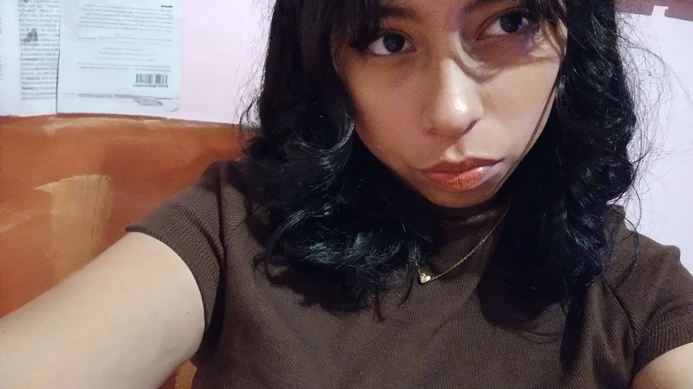

Sánchez Benitez Odalys Jocelyn
Soy alumna del CBTis No. 142 y estudio la especialidad de Programación en el turno matutino. Mi trayectoria como programadora es aún corta, pero se basa en los conocimientos adquiridos durante mi formación en la preparatoria. A lo largo de este tiempo, he aprendido lenguajes como C, C++, Java, HTML y CSS, los cuales he utilizado para desarrollar programas y páginas web orientadas a resolver problemáticas planteadas por mis profesores. Esta experiencia me ha permitido fortalecer mis habilidades lógicas, mi capacidad para trabajar con distintos lenguajes de programación y mi interés por seguir aprendiendo en el área del desarrollo de software.
